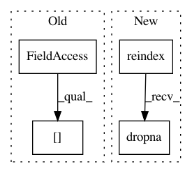

34e7e918bd4fc09f643e8bb448e875a9bcb7e841,linearmodels/panel/data.py,PanelData,first_difference,#PanelData#,253
Before Change
Differenced values
diffs = self._frame.diff(1).iloc[1:]
elabels = self._frame.index.labels[0]
same = elabels[1:] == elabels[:-1]
diffs = diffs.loc[same]
diffs = self._minimize_multiindex(diffs)
return PanelData(diffs)
After Change
major_axis=self.time[1:],
minor_axis=self.entities)
diffs = diffs.swapaxes(1, 2).to_frame(filter_observations=False)
diffs = diffs.reindex(self._frame.index).dropna(how="any")
return PanelData(diffs)
@staticmethod
def _minimize_multiindex(df):
In pattern: SUPERPATTERN
Frequency: 3
Non-data size: 4
Instances
Project Name: bashtage/linearmodels
Commit Name: 34e7e918bd4fc09f643e8bb448e875a9bcb7e841
Time: 2017-03-29
Author: kevin.k.sheppard@gmail.com
File Name: linearmodels/panel/data.py
Class Name: PanelData
Method Name: first_difference
Project Name: commonsense/conceptnet5
Commit Name: 038e520ff7b764ef6c2fdc548372299c8f547e56
Time: 2018-04-20
Author: rob@luminoso.com
File Name: conceptnet5/vectors/debias.py
Class Name:
Method Name: get_vocabulary_vectors
Project Name: commonsense/conceptnet5
Commit Name: 038e520ff7b764ef6c2fdc548372299c8f547e56
Time: 2018-04-20
Author: rob@luminoso.com
File Name: conceptnet5/vectors/debias.py
Class Name:
Method Name: de_bias_category